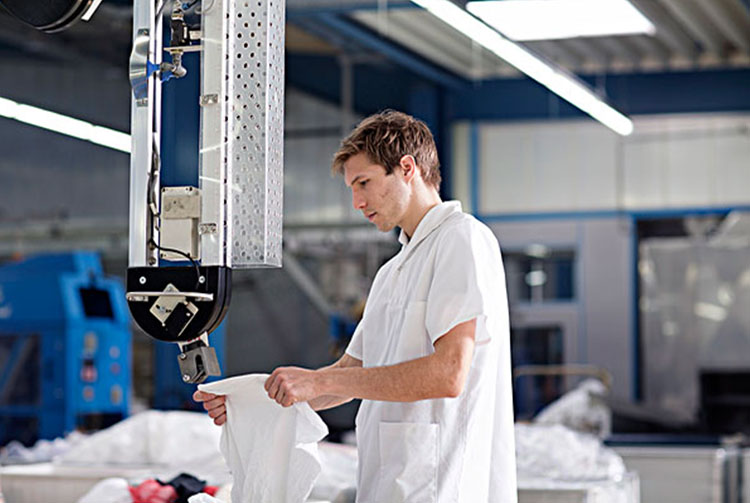
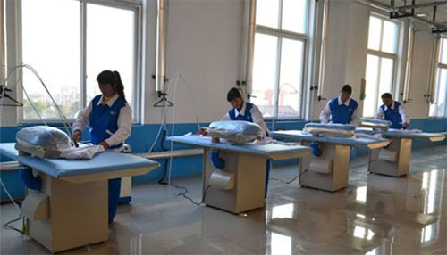
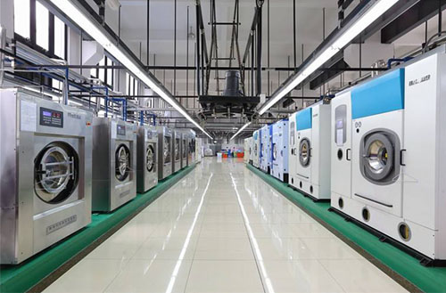
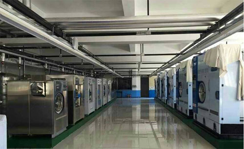

你看不见的干净，才是真正的干净！

我们专注于衣物的深层清洁与健康安全，去除污垢仅仅是洗涤过程的一小步，如何保障衣物清洗过程中，不造成衣物间的二次污染，才是宿洗团队和其他普通洗衣工厂的最大区别。
为了达到这个目标，彻底打破传统洗涤中衣物素积合并在一起洗涤的黑盒，我们独创了“随到到洗”模式，哪怕只有一件衣物，我们页毫不犹豫地开机洗涤，从根本上杜绝交叉污染源头。

呵护好每一件需妻淸洗的衣物，是我们的责任而无论多严格的汏涤过程，都不能避免化学制剂的使用，要做到精细控每一道工序中洗涤用料的使用量，针刘不同衣物硏发不同的洗剂配比，就需要我们]的洗衣师傅，像对待艺术品一样对待每一次洗涤。
26名洗衣师傅，305次对比试验，600多个日日夜夜，我们终于可以做到针对不同衣物投放结效比最好，同时残留最低的洗涤配比方案，让用户放心我们才能安心。

很多洗衣工不愿意炽干衣物，宁愿自然晾干，主要原因还是考虑成本，商用烘干机是洗衣房里能耗成本最高的机器，但是封式的烘干机，能减少晾干时的风沙落尘，而且电脑控温的设备，还能够模自然风吹，自动降温。
宿洗总是愿意为用户多想一点，我们从不让衣物直接晾晒，温度无法控制的阳光直射会让部分面料的衣物造成无法挽回的损伤，或加速衣物的老化，在宿洗标准涤流程都包含烘干的步，才能达到最快5小时的极速清洗。

为了不让在洗涤过程中对衣服形成2次污染，带来健康隐患，我们会在洗深步骤的最终，安排紫外光消毒，从根本上灭活可能存在的病毒与细菌，哪怕是贴身衣物，拆开包装就能穿。